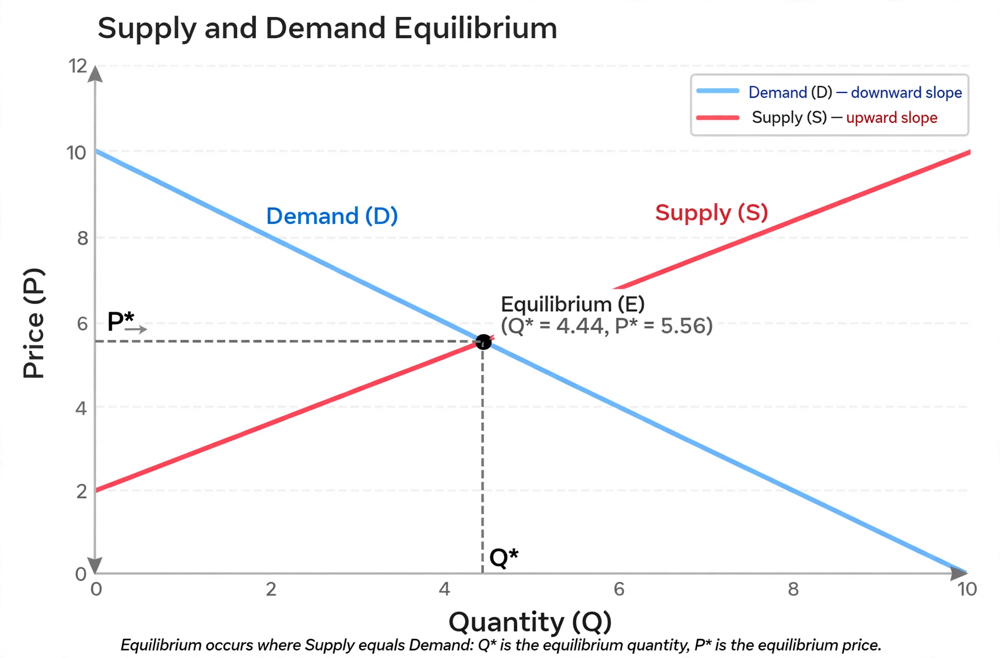

| General equilibrium theory | |
|---|---|
 | |
| Founder | Léon Walras (1874) |
| Key results | Arrow–Debreu existence proof; fundamental theorems of welfare economics |
| Contrast | Partial equilibrium |
In economics, general equilibrium theory attempts to explain the behaviour of supply, demand, and prices in a whole economy with several or many interacting markets, by seeking to prove that the interaction of demand and supply will result in an overall general equilibrium. It contrasts with partial equilibrium, which analyses a single market in isolation.
The theory dates to Léon Walras's Éléments d'économie politique pure (1874), the first attempt to model an entire economy as a system of simultaneous equations. The modern rigorous existence proof for competitive equilibrium was given by Kenneth Arrow and Gérard Debreu in 1954, building on Abraham Wald's work of the 1930s and on fixed-point theorems from topology.
The first fundamental theorem of welfare economics states that any competitive equilibrium leads to a Pareto efficient allocation of resources. The second states that any efficient allocation can be reached by a suitable redistribution of initial endowments followed by competitive exchange. Extensions include equilibria with incomplete markets, overlapping generations, and sunspot equilibria.
The Sonnenschein–Mantel–Debreu theorem shows that aggregate excess demand functions can take almost any form consistent with basic restrictions, undermining hopes for strong uniqueness and stability results. Critics also question the realism of perfect competition, complete markets, and the auctioneer adjustment process (tâtonnement).
Léon Walras · Arrow–Debreu model · Partial equilibrium · Pareto efficiency · Gary Becker